知树阅读 · 个人数字图书馆
一个放笔记、书、PDF 和小工具的网页书架。这里用图和步骤，把怎么用讲清楚；想自己搭一个，切到“安装部署”。
知树阅读是一个个人数字图书馆：站长把笔记、书、PDF 和网页小工具放进一个文件夹，它们就变成网页上一张张卡片。不用注册，不用登录，打开就能读。你可以做三件事：
点开卡片就在页面里阅读，HTML、Markdown、TXT、PDF 都行；会记住读到哪里，能加书签、换阅读颜色。
把你自己的文件放进来，一次选很多个，分成“合集”。它们只存在你自己的浏览器里，不会上传，别人也看不到。
“公共目录”把很多人的博客、文章、书单汇在一起；你也可以把自己的网址或文章送去收录，不需要账号。
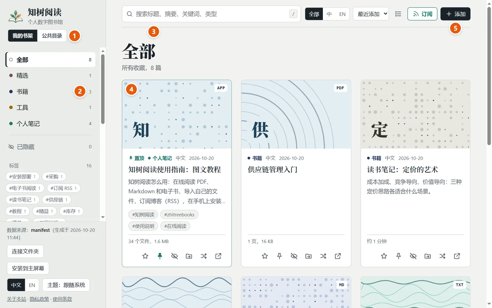
搜索框右边还有：全部 / 中 / EN（只看某种语言的内容）、排序（最近添加 / 发布日期 / 最近阅读 / 标题；公共目录按最新排列）、列表 / 卡片视图、订阅。左下角可以切换界面语言（中文 / EN）和主题（跟随系统 / 浅色 / 深色）。
点任意一张卡片就进入阅读器。所有格式共用同一排按钮：
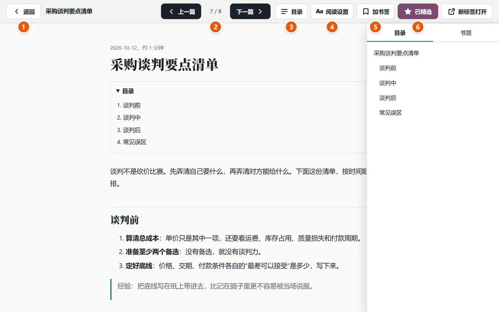
滚动时会自动记住进度，下次打开回到原来的位置；首页最上面的“继续阅读”列出读到一半的几篇。
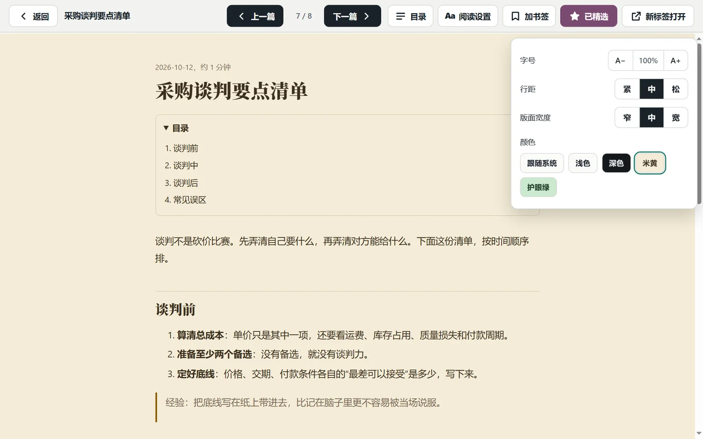
| 格式 | 怎么显示 | 字号 / 行距 / 宽度 | 目录和书签 |
|---|---|---|---|
| Markdown、TXT | 统一的阅读排版 | 都能调 | 有；TXT 里“第三章”“Chapter 4”这样的行会当成章节 |
| HTML | 保留原网页的样子 | 只能换颜色 | 标题规范的页面有 |
| 浏览器自带的 PDF 阅读器 | 只能换颜色 | 没有（手机上显示“打开 / 下载”） |
这里换的是色调（米黄、护眼绿、深色），网页做不到真正的滤蓝光。
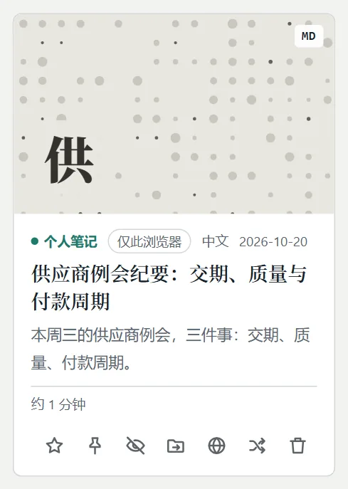
| 设为精选：收进“精选”分类，适合放最爱的几篇。 | |
| 置顶：不管怎么排序、在哪个分类里，都排在最前面，并带“置顶”标记。多篇置顶时，最后置顶的排最前。你在网页上点的置顶只对你自己有效，不会影响别的访客。 | |
| 隐藏：从分类和搜索里拿掉，不删文件。左侧最下面的“已隐藏”里可以恢复。 | |
| 移动到其他分类：换个分类放；你自己的文件还可以放进别的合集。 | |
| 公开到公共目录：把这一项送去审核，见第 6 节。站点开通了公共目录才有。 | |
| 换一张封面：封面是按标题生成的，不喜欢就换一张。 | |
| 新标签打开：脱离阅读器，单独打开这个页面。 | |
| 删除：只有你自己的文件才有这个按钮（浏览器里添加的，或你连接的本机文件夹里的），点了会先确认，删了就找不回来。 |
站点自己的书是站长放的，只有站长本人能在自己的电脑上删掉再重新发布；访客在页面上做不到，也没有这样的请求可以调用。你在页面上能做的是“隐藏”，它只在你自己的浏览器里生效。星标、置顶、移动分类也是一样。
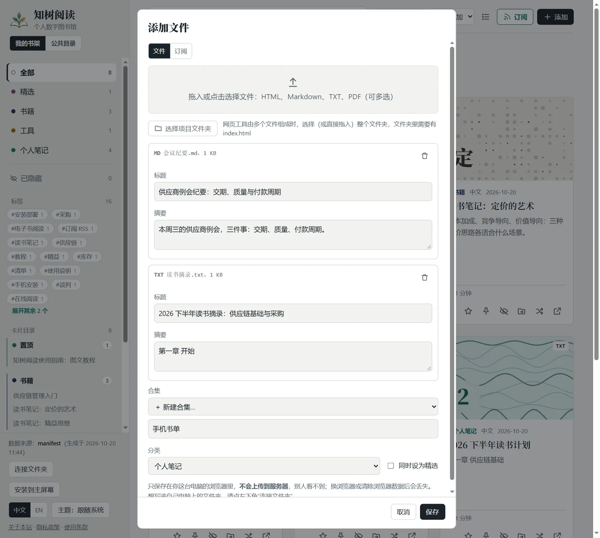
存在你这个浏览器里，不会上传到任何服务器，别人也看不到。所以：换浏览器、换设备，或者清除了网站数据，这些文件就没有了；手机和电脑之间不同步。想长期放在自己电脑上，用左下角的“连接文件夹”（Chrome / Edge）：选一个文件夹，里面的文件会直接显示出来，添加也会写进这个文件夹。
你的文件、合集、订阅、阅读进度和书签只存在这个浏览器里，所以换设备或清除网站数据之前，先做一份备份。点左下角的 备份与恢复：
备份文件由浏览器生成，保存在你自己的设备上，不经过服务器。站点自带的书和你“连接”的本机文件夹里的文件不在备份里。首页第一次打开时的“这是什么”说明，关掉以后可以在左下角点“这是什么”再看。
站点开通了同步服务时，左下角会有一个 同步 按钮（没有就是没开通）。它是可选的，不开也能完整使用；不用注册，不用密码。
用得久了，页面会问你一次：如果以后加上“大文件同步”（PDF 等，空间更大），你愿意付费吗？你的回答只作为一个匿名计数发给同步服务，不含任何能认出你的信息。
一次导入的一批文件，可以放进一个合集。选中一个合集以后，卡片、分类、标签、搜索、“继续阅读”都只显示这个合集，书架就干净了。
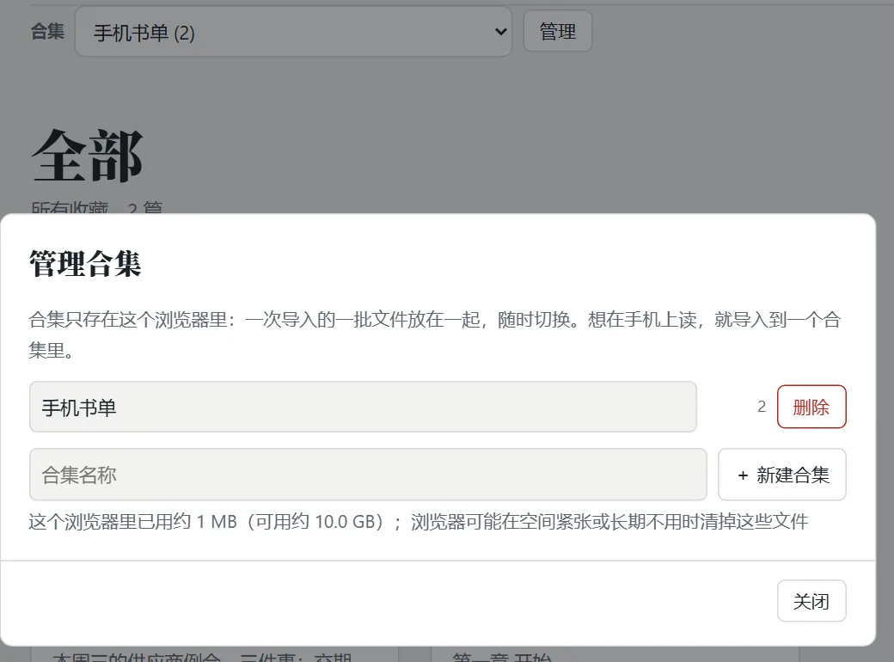
想读的博客，不用每次去它的网站看有没有新文章：在“添加”窗口切到 订阅，把它订阅到你自己的书架里。
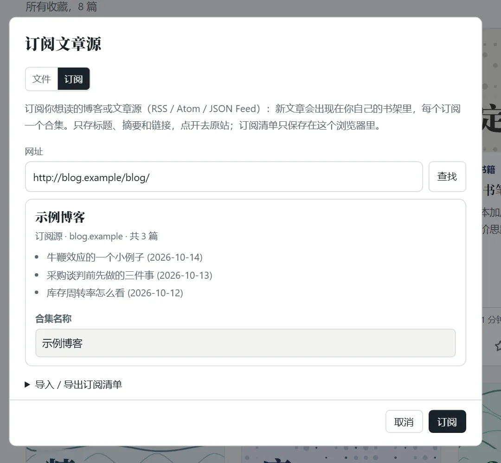
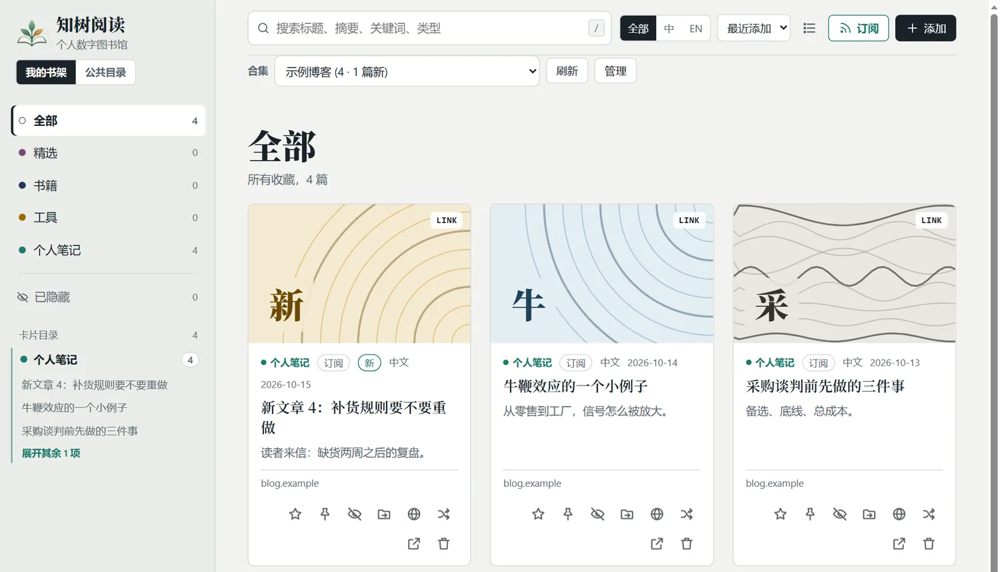
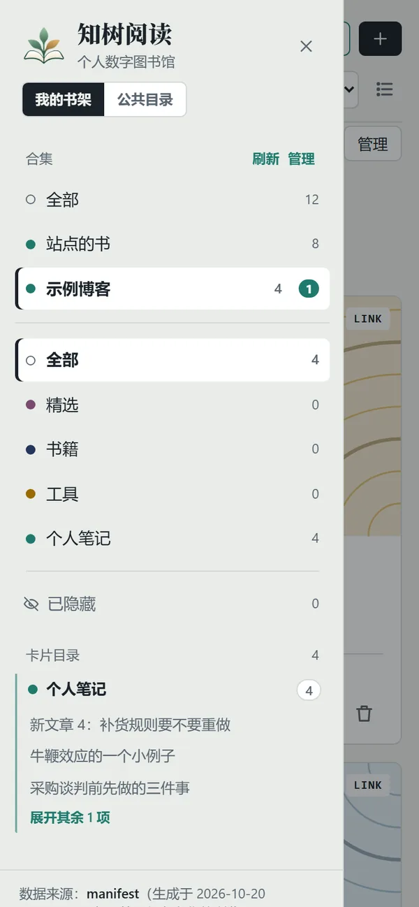
这个功能需要站长开通公共目录的服务（见“安装部署”）。没开通时，“添加”窗口里只有文件。
装好以后全屏打开，打开过的页面和文件（最多 120 个）会保存下来，没有网络也能再读。
不装的话，Safari 大约 7 天不用，就会清掉这个网站的数据（阅读进度、书签、你添加的文件都会丢）。装到主屏幕的不受这个限制。
点左上角的 ≡（或在书架上向右滑）打开左侧列表：最上面是合集，然后是分类、标签，最下面是“卡片目录”。把目录里的某一条往左滑，下面露出按钮：
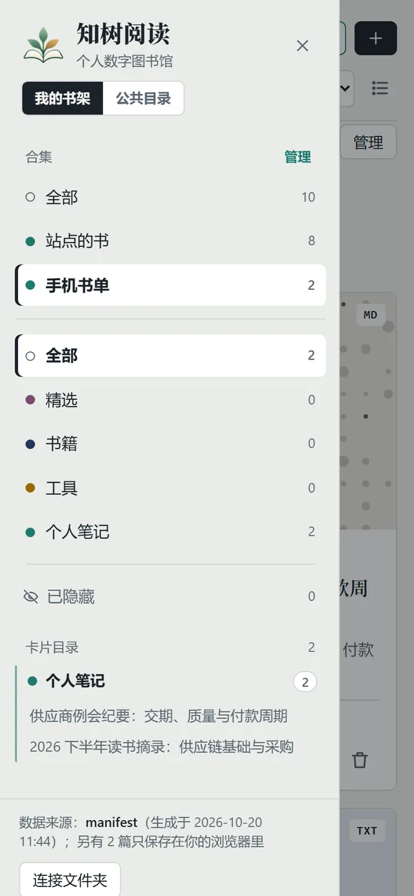
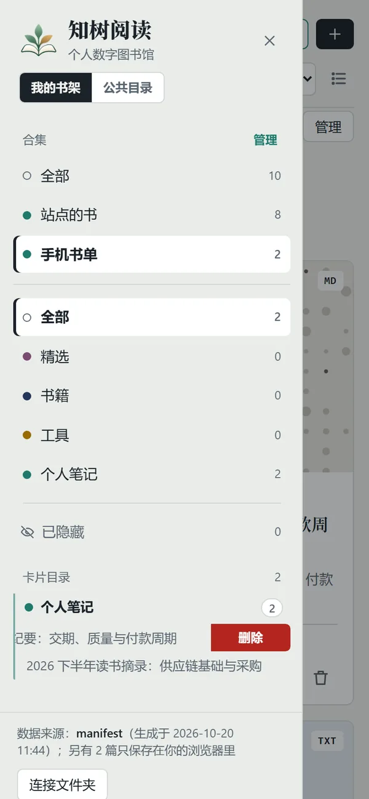
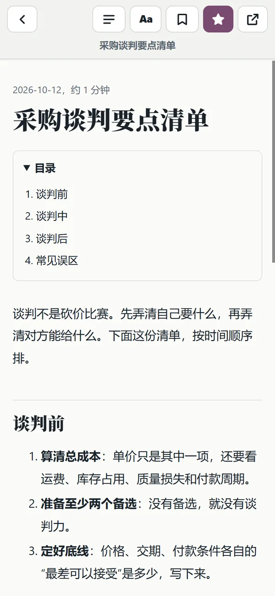
装到主屏幕以后，在文件管理器、微信、浏览器里点“分享”，选“知树阅读”：分享的 PDF / Markdown / TXT / HTML 会打开“添加”窗口，选好合集点保存；分享的网址会直接存成“收藏的链接”。第一次装完，要等浏览器更新应用信息（通常一天内，重新添加图标会立刻生效）才会出现在分享列表里。iPhone 的 Safari 没有这个功能，请用“添加”多选文件。
点左侧的“公共目录”，看到的是很多人的博客、文章、GitHub 仓库、视频汇成的一份目录。它不存别人的全文：只记标题、摘要、封面图地址和回到原站的链接。点一篇文章，会在阅读器里直接读（和订阅里的一样，由“更新服务”读原文；读不了的页面、视频和仓库去原站）；你收藏它，读过的正文也一起存进你的书架。
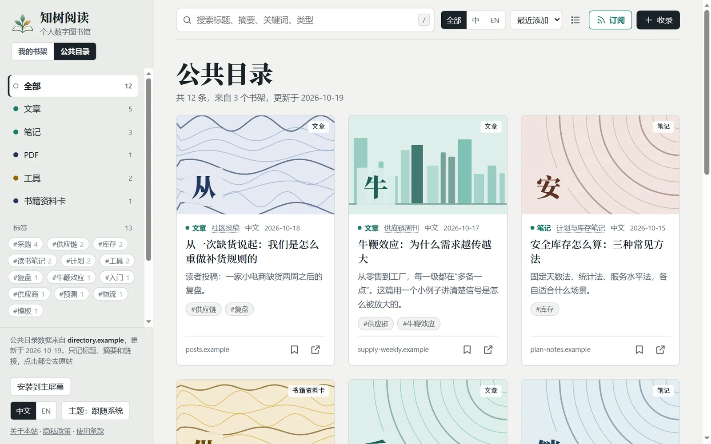
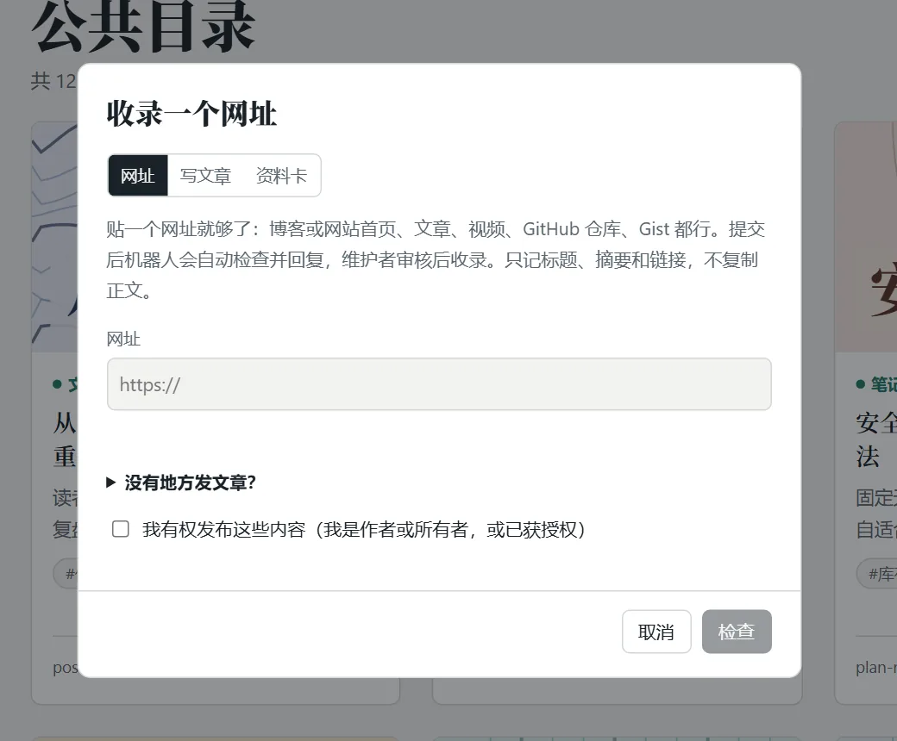
提交以后会进入站长的审核队列，卡片上显示“已提交，等待审核”；通过后就出现在公共目录里。网址的不同写法（http / https、www、末尾斜杠、跟踪参数）算同一个；标题、作者、摘要几乎一样的也会被拦下，并告诉你像哪一个。
形如 …/#read/local%3A… 的地址是你自己浏览器里的阅读地址，别人打不开。提交时请用真实网址，或者直接点卡片上的地球图标。
这一节讲的是反过来：订阅这个网站，用你自己的 RSS 阅读器读。（订阅别人的文章，见第 4 节。）点顶栏绿色的“订阅”按钮：里面有“在 Feedly / Inoreader 中订阅”的一键链接和复制按钮。可以只订阅一部分：全部、某个分类、某个标签，打开时默认选中你正在看的那个。订阅以后，有新文章时你的 RSS 阅读器（Feedly、Inoreader 等）会提醒你。
它们存在你添加时所用的那个浏览器里，不同设备、不同浏览器之间不同步。想在手机上读，就在手机上导入（可以多选，放进一个合集），或者用“分享到知树阅读”。想把电脑上的东西带过去：先在电脑上“备份与恢复”导出，再在手机上恢复。
在网站上点这些，只保存在你自己的浏览器里，是你自己的整理方式，不会改动网站。要让所有人看到，只有站长能在自己电脑上改，然后重新发布。
访客不能删。你可以“隐藏”它（只对你自己有效）。如果你是站长，在自己电脑的 library/ 里删掉，再重新部署。
先在合集的“管理”里点“刷新”，看那一行写的原因。常见的是：对方网站暂时打不开、对方不让程序读取、或者那个地址其实不是订阅源。网页不能在后台自动更新，只有你打开页面的时候才会去读；对方没有发新文章，也就没有新的。
PDF 由浏览器自带的阅读器显示，页面读不到它的结构（扫描版更是没有文字）。HTML、Markdown、TXT 才有目录和书签。
你的文件、阅读进度、书签、合集都只保存在你自己的浏览器里，不会发送到服务器。网站本身不设账号。详细见隐私政策。
/ 聚焦搜索；Esc 关闭阅读器；阅读时 ← → 上一篇 / 下一篇。
想自己搭一个这样的网站？切到“安装部署”。
| 要做的事 | 需要 | 必须吗 |
|---|---|---|
| 在自己电脑上用 | Python 3（不用装任何依赖） | 必须 |
| 发布到网上 | Node.js、一个 Vercel 账号（免费的就行） | 想让别人访问就需要 |
| 自己的网址 | 一个域名，在 Vercel 里绑定 | 可选，不绑也有 *.vercel.app |
| 公共目录和投稿 | 一个 GitHub 账号 | 可选 |
这个项目是一个文件夹：index.html（网页）、serve.py（本地服务）、build_index.py 和 seo.py（部署时构建）、vercel.json（部署设置），以及你的内容所在的 library/。
在项目文件夹里打开终端，运行：
python serve.pyMac / Linux 用 python3 serve.py。浏览器会自动打开 http://127.0.0.1:8000，换端口用 --port 9000。就这一条命令，不用装别的。
library/ 里放文件，刷新页面就出现；也可以点“添加”或把文件拖进页面，直接写进 library/。library/_meta.json）。serve.py 之后要重启它。library/
├── books/ 书籍
├── tools/ 工具（网页小程序）
├── notes/ 个人笔记
├── featured/ 精选
└── _meta.json 星标、置顶、隐藏、标题改动（自动生成）index.html + css + js + 图片组成时，放进 library/tools/工具名/，整个文件夹是一张卡片，里面的资源请用相对路径（style.css），不要用 / 开头。这份指南本身就是这样放的：library/notes/guide/。Markdown 开头可以写 front matter，指定标题、摘要、关键词；HTML 里用 meta：
---
title: 我的标题
description: 一句话摘要
tags: [供应链, 读书]
featured: true # 设为精选
pinned: true # 置顶，所有访客都看到
---<meta name="description" content="一句话摘要">
<meta name="keywords" content="供应链, 采购">
<meta name="archive:pinned" content="true">如果一篇内容有两种语言的页面，各放一个文件，再告诉网站英文那份在哪里。访客把界面切到英文时，看到的是英文标题和摘要，点开的是英文页；搜索引擎会拿到两个地址，并知道它们互为译文。
---
title: 我的标题
title_en: My title
description_en: A one-sentence summary in English
tags_en: [supply chain, reading]
alt_en: en/index.html # 英文页，相对于这一篇的位置，必须在 library/ 里
---<meta name="archive:title_en" content="My title">
<meta name="archive:description_en" content="A one-sentence summary in English">
<meta name="archive:keywords_en" content="supply chain, reading">
<meta name="archive:alt_en" content="en/index.html">这份指南就是这样做的：library/notes/guide/index.html 是中文页，library/notes/guide/en/index.html 是英文页。
想让所有访客都先看到这篇指南，需要你在自己电脑上置顶，再重新部署。两种做法，选一种：
pinned: true，HTML 里加 <meta name="archive:pinned" content="true">。写成数字（比如 pinned: 2）也行，数字越大越靠前。这份指南用的就是这种。python serve.py 打开页面，点卡片上的图钉（写进 library/_meta.json）。然后重新部署（见下一节）。多篇置顶时，最后置顶的排最前。
线上网站没有后台，改不了服务器上的东西，所以访客（包括站长自己）在线上点的置顶、隐藏、星标都只保存在各自的浏览器里。
Vercel 是静态 / 无服务器平台，不能运行 serve.py。部署时它会按 vercel.json 先运行构建脚本，把站点构建到 dist/，部署的是 dist/，不是你的原文件夹。
npm i -g vercel
vercel loginvercel，按提示创建项目（第一次回答几个问题，一路回车即可）。vercel.json，把构建命令里的网址 --site-url https://books.zhitree.cn 换成你自己的（站点地图和订阅源都用它）。vercel --prodlibrary/ 里放好 → 本地用 serve.py 看一眼 → vercel --prod。新文件必须重新部署才会出现。dist/ 里没有隐藏的文件，清单里也没有；想让某篇上线就取消隐藏。https://你的域名/manifest.json，看 generated 和 items：不在清单里，就是部署的不是最新文件。serve.py，不要用 vercel dev（它启动时就记住了当时有哪些文件，之后新增或移动的文件会 404）。about.html、privacy.html、terms.html 是普通 HTML，直接改文字。署名和联系方式写在 site.json（不会发布）：
{ "owner": "你的名字或昵称", "contact": "you@example.com", "license": "CC BY-NC 4.0" }隐私政策写的是网站目前的实际情况，要和你真正在用的东西保持一致。
部署时会自动做这些，你的原文件一个字节都不会改：给每个页面补上缺的标签、给 Markdown / TXT 生成带全文的页面、生成 sitemap.xml 和 robots.txt、把长长的中文文件名换成短而稳定的地址、生成订阅源。有英文版的页面还会互相补上 hreflang 链接，并一起写进站点地图，让搜索引擎把对应语言的页面给对应语言的读者。你要做的只有两步：
sitemap.xml。刚提交时显示“无法获取”很常见，过几小时到两天才会变成“成功”。sitemap.xml。想把新地址主动告诉 Bing 等（IndexNow）：
python indexnow.py --init # 只需第一次：生成密钥，写进 site.json
vercel --prod
python indexnow.py # 之后每次部署完运行，只发新的和改过的地址公共目录的数据和程序在另一个项目 shelf-directory（和本项目同级的文件夹），由 GitHub 每天自动更新，本站只负责显示。分三步：
shelf-directory 推上去；仓库 Settings → Actions → General → Workflow permissions 选“Read and write”；到 Actions → Daily → Run workflow 手动跑一次。site.json 里加上 "directory": "目录的网址"（以 / 结尾），重新部署。页面左侧就出现“我的书架 | 公共目录”。shelf-directory 也部署成一个 Vercel 项目（里面的 api/submit.py 就是提交服务），并设置环境变量：
| 名字 | 值 |
|---|---|
SHELF_REPO | 用户名/仓库名 |
SUBMIT_GITHUB_TOKEN | 只给这个仓库的 Issues 读写（再加 Contents 只读）的令牌 |
ALLOWED_ORIGINS | 允许提交的网页来源，默认你的主站网址 |
IP_SALT | 一长串随机文字，用来给来访者地址做不可逆的短哈希，限制每人每天的提交次数 |
https://…/api/submit）写进 shelf-directory/registry/config.json 的 "submit_api"，推送。改了环境变量要重新部署一次才生效。api/feed.py 就是读者订阅别人博客时用的“更新服务”（网页自己读不了别人的网站，由它代读，只返回标题、摘要和链接，什么都不保存，也不需要任何环境变量）。页面把提交服务地址末尾的 /submit 换成 /feed 来找它，所以只要 submit_api 写对了、ALLOWED_ORIGINS 里有你的主站网址，“添加”窗口里就会出现“订阅”标签。每个访客每 10 分钟的查询次数有软限制，防止被滥用。api/sync.py 是“同步码”服务，读者的书单和小文本加密后存在一个 Redis 里（服务器读不了内容）。在 Vercel 项目的 Storage / Marketplace 里添加一个 Upstash Redis 并连到这个项目，它会自动写入环境变量（KV_REST_API_URL + KV_REST_API_TOKEN，或 UPSTASH_REDIS_REST_URL + UPSTASH_REDIS_REST_TOKEN，两种都认），重新部署一次即可；打开 https://你的目录站点/api/sync 看到 "configured": true 就开通了，页面左下角会出现“同步”按钮。可选环境变量：SYNC_QUOTA（每个同步码的字符数上限，默认 1200 万）、SYNC_TTL_DAYS（不使用多少天后清掉，默认 180）、SYNC_MAX_KEYS（数据库里的键超过多少就不再接收新的同步码，默认 6000，约 1000 个）。每个访客每天最多新建 3 个同步空间。GET /api/sync 还会显示“愿意付费吗”问题收到的匿名计数。所有申请（GitHub 表单、网页上提交的网址、书架里的文章）都进同一个审核页：https://你的目录站点/admin/。
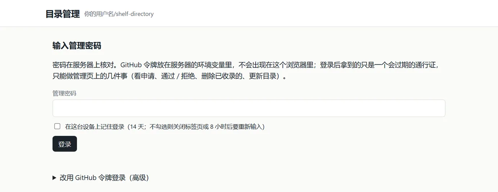
在目录项目的 Vercel 环境变量里再加两个，重新部署：
| 名字 | 值 |
|---|---|
ADMIN_PASSWORD | 管理密码，至少 12 个字符（最好是一句长长的话）。不到 12 个字符时密码登录不会启用。 |
ADMIN_GITHUB_TOKEN | 令牌：只选这个仓库，Issues 读写、Actions 读写、Contents 只读。不要和上面的 SUBMIT_GITHUB_TOKEN 共用。 |
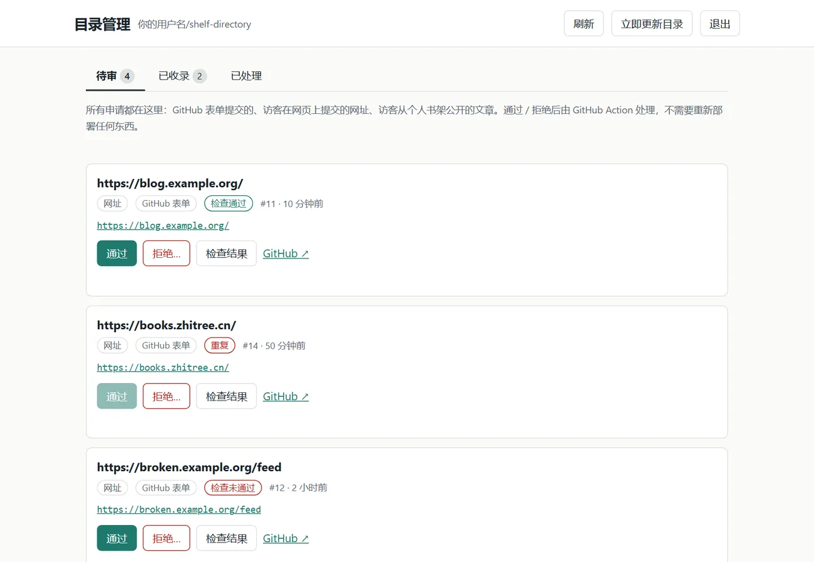
python3 提示打不开 / 跳到应用商店那是微软商店的占位程序。直接用 python serve.py；如果 python 也不行，请先安装 Python 3 并勾选“Add Python to PATH”。
python serve.py --port 9000，换一个端口。
静态站点没有后台，新文件必须重新部署。部署后打开 /manifest.json 看 generated；如果文件在 library/_meta.json 里被标了隐藏，也不会上线。
这是构建自带的检查：首页、清单里的页面、私有文件有任何一项不对就会停止发布，保留上一次的网站不变。按日志里逐条列出的问题修就行。
说明你开着的 serve.py 是更新前启动的。关掉它，重新运行 python serve.py。
说明站点还没开通同步。目录项目要有一个 Redis（见上面“开通公共目录和投稿”的最后一步），部署后 https://你的目录站点/api/sync 应该显示 "configured": true；还要保证目录项目的 ALLOWED_ORIGINS 包含你的主站网址。
订阅靠目录项目的 /api/feed。检查三件事：目录项目已部署（打开 https://你的目录站点/api/feed 应该看到 "service": "shelf-feed"）；目录的 directory.json 里有 submit_api（页面据此找到它）；目录项目的 ALLOWED_ORIGINS 包含你的主站网址。
目录项目的 Vercel 环境变量里缺 SHELF_REPO 或 SUBMIT_GITHUB_TOKEN，补上并重新部署。
只是想用？回到“使用说明”。